This is the first of my blog posts here, about the issue of overprinting and some ways to handle it using R and ggplot(). Theres a small spin off topic on the impact on bivariate correlations and on linear regression of discretising continuous variables.
Overprinting is where one point on a graph overlies another. Its mainly a problem with scattergrams and if you have large numbers of points and few discrete values it can make a plot completely misleading. OK, lets make up some data.
n <- 5000 # a lot of points means that overprinting is inevitable
nVals <- 5 # discretising continuous variables to this number of values (below) makes it even more certain
set.seed(12345) # ensures we get the same result every time
### now generate x and y variables as a tibble
as_tibble(list(x = rnorm(n),
y = rnorm(n))) -> tibDat
### create strong correlation between them by adding x to y (!)
tibDat %>%
mutate(y = x + y) -> tibDat
### now we want to discretise into equiprobable scores so find the empirical quantiles
vecXcuts <- quantile(tibDat$x, probs = seq(0, 1, 1/nVals))
vecYcuts <- quantile(tibDat$y, probs = seq(0, 1, 1/nVals))
### now use those to transform the raw variables to equiprobable scores in range 1:5
tibDat %>%
mutate(x5 = cut(x, breaks = vecXcuts, include.lowest = TRUE, labels = FALSE, right = TRUE),
y5 = cut(y, breaks = vecYcuts, include.lowest = TRUE, labels = FALSE, right = TRUE)) -> tibDat
Now lets have a simple scatterplot.
### use ggplot to generate the simple scattergram for the raw variables
ggplot(data = tibDat,
aes(x = x, y = y)) +
geom_point() +
theme_bw()
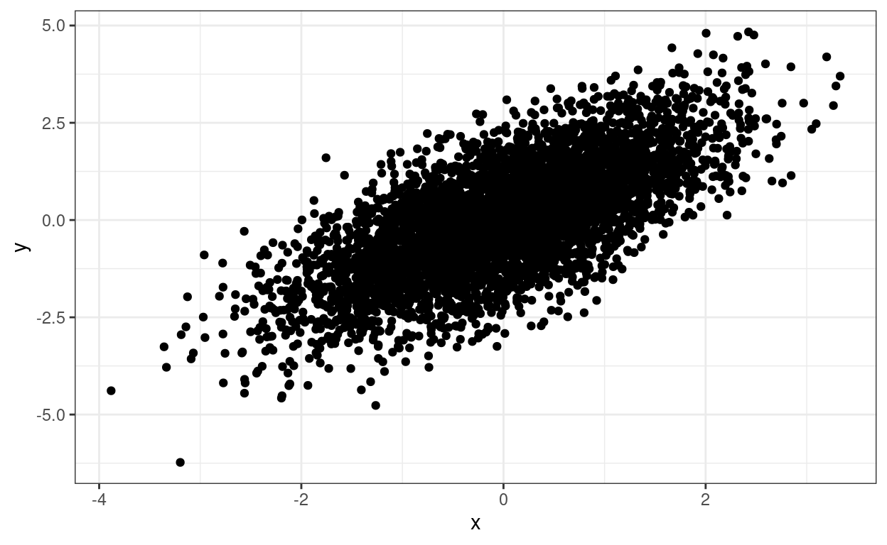
The relationship between the two variables is clear but we dont know about any overprinting. We can add a loess smoothed regression which clarifies the relationship between the scores but doesnt resolve the overprinting issue.
ggplot(data = tibDat,
aes(x = x, y = y)) +
geom_point() +
geom_smooth() + # adding the loess smoother
theme_bw()
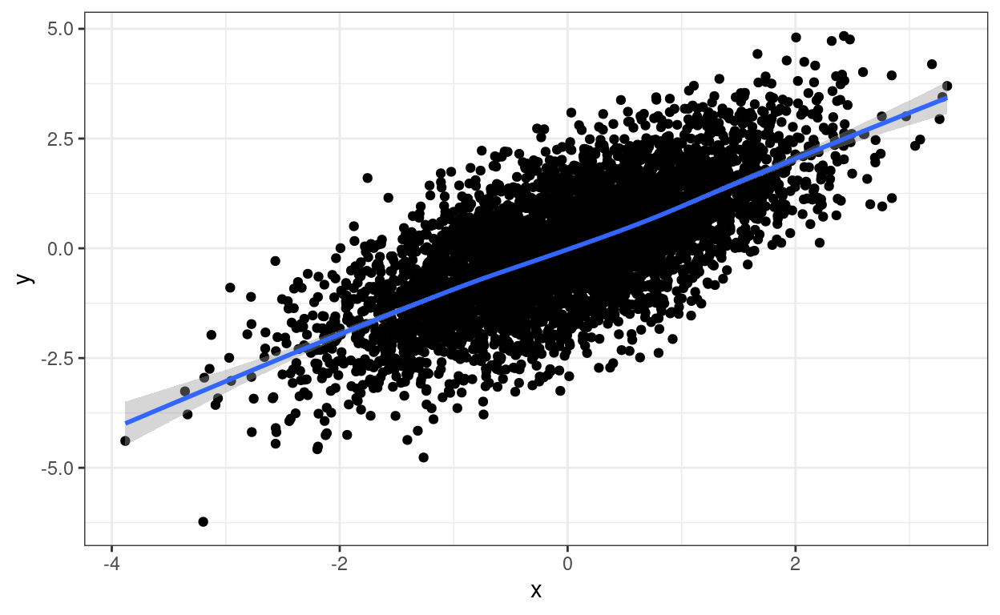
However, to really drive home the point about overprinting, if those points are transformed and discretised to five equiprobable scores then things look like this.
ggplot(data = tibDat,
aes(x = x5, y = y5)) + # use discretised variables instead of raw variables
geom_point() +
theme_bw()
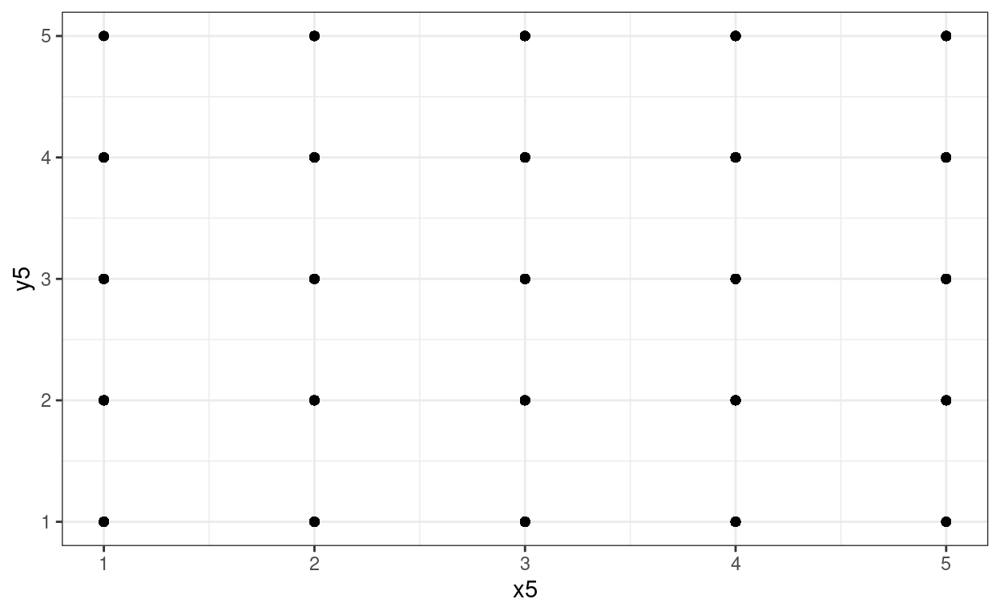
Whoops: much overprinting as 5000 points have collapsed to 25 visible points on the scattergram but we cant see how much and no apparent relationship between the variables at all.
Again we can add a regression to that plot for amusement and to show that the transform hasnt removed the relationship. (Has to be a linear regression as the number of distinct points doesnt allow for loess smoothing.)
ggplot(data = tibDat,
aes(x = x5, y = y5)) +
geom_point() +
geom_smooth(method = "lm") + # linear regression fit
theme_bw()
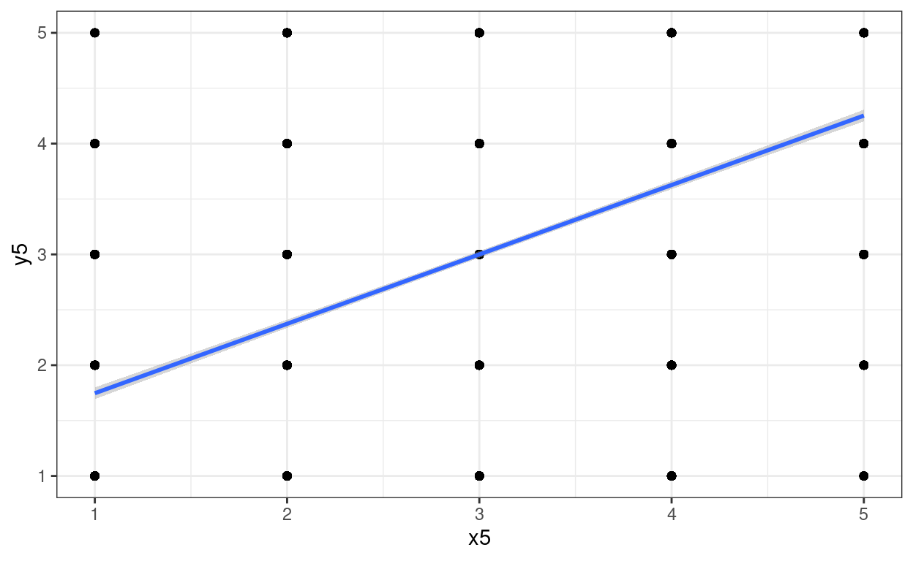
One way around overprinting it is to jitter the points. Here I have used geom_jitter(width = .2, height = .2) which adds random jittering to both x and y values spread across .2 of the implied bins. Ive left the raw data in in blue.
There are situations in which you just want jittering on one axis and not the other so you can use geom_jitter(width = .2). Sometimes playing around with width helps get the what seems the best visual fit to the counts.
ggplot(data = tibDat,
aes(x = x5, y = y5)) +
geom_jitter(width = .2, height = .2) + # jittered data
geom_point(data = tibDat,
aes(x = x5, y = y5),
colour = "blue") +
theme_bw()
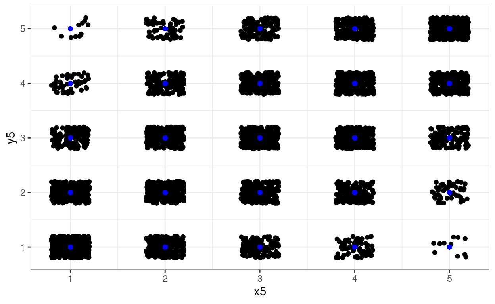
Another approach is to use transparency. Here you just have the one parameter, alpha and again, sometimes you need to play with different values.
ggplot(data = tibDat,
aes(x = x5, y = y5)) +
geom_point(alpha = .01) +
theme_bw()
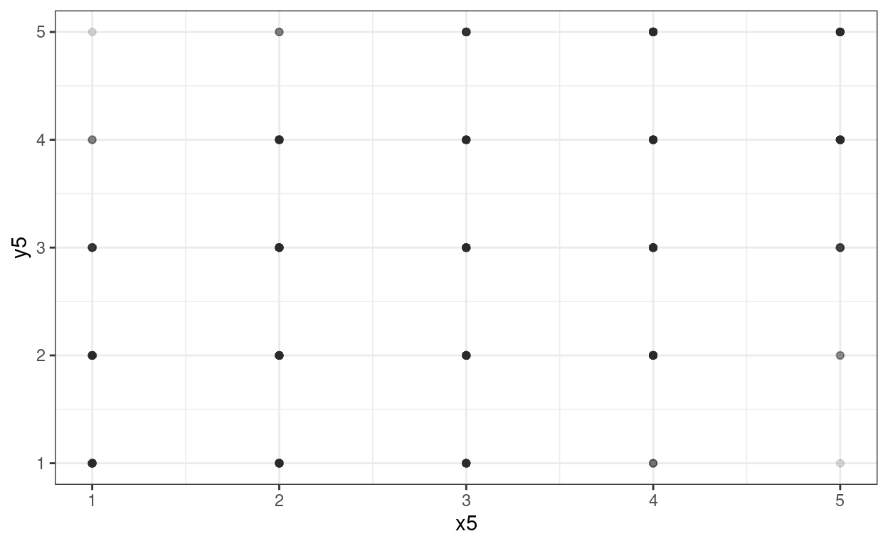
Thats not working terribly well as we have so many points (n = 5000).
geom_count()And another approach, good when values are widely spaced as here, is geom_count().
ggplot(data = tibDat,
aes(x = x5, y = y5)) +
geom_count() +
scale_size_area(n.breaks = 10) +
theme_bw()
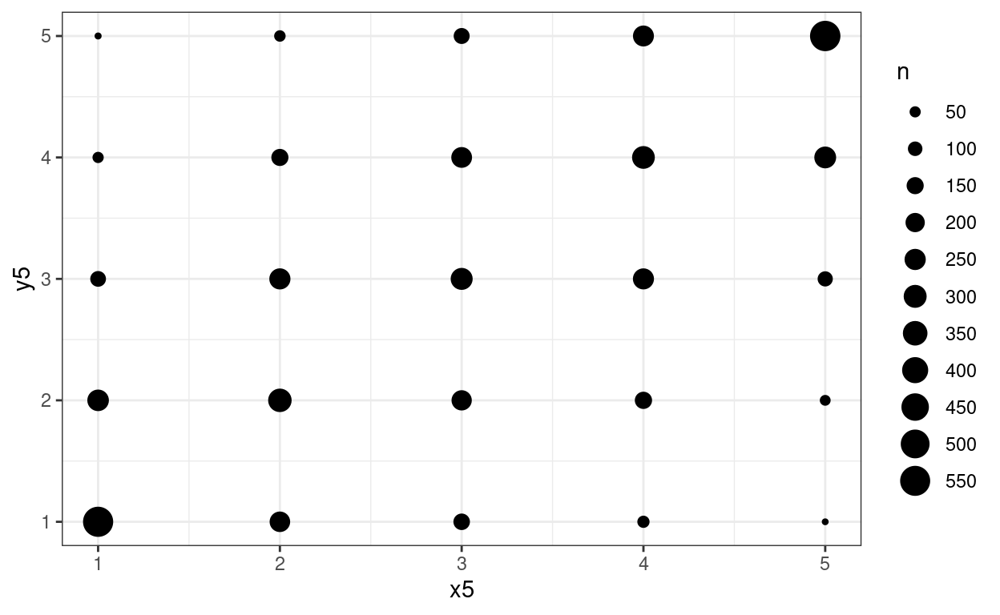
I used a rather excessive number of breaks there but it makes the point.
In this next set of blocks Ive applied the same three tricks but to both the raw data and the discretised data.
### reshape data to make it easy to get plots side by side using facetting
tibDat %>%
### first pivot longer
pivot_longer(cols = everything()) %>%
### which gets something like this
# # A tibble: 20,000 x 2
# name value
# <chr> <dbl>
# 1 x 0.586
# 2 y -0.107
# 3 x5 4
# 4 y5 3
# 5 x 0.709
# 6 y 1.83
# 7 x5 4
# 8 y5 5
# 9 x -0.109
# 10 y 0.0652
# # with 19,990 more rows
### now get new variables one for x and y
mutate(variable = str_sub(name, 1, 1),
### and one for the transform
transform = str_sub(name, 2, 2),
transform = if_else(transform == "5", "discretised", "raw"),
transform = factor(transform,
levels = c("raw", "discretised")),
### create an id variable clumping each set of four scores together
id = (3 + row_number()) %/% 4) %>%
### so now we can pivot back
pivot_wider(id_cols = c(id, transform), values_from = value, names_from = variable) -> tibDat2
### to get this
# A tibble: 10,000 x 4
# id transform x y
# <dbl> <chr> <dbl> <dbl>
# 1 1 raw 0.586 -0.107
# 2 1 discretised 4 3
# 3 2 raw 0.709 1.83
# 4 2 discretised 4 5
# 5 3 raw -0.109 0.0652
# 6 3 discretised 3 3
# 7 4 raw -0.453 -2.42
# 8 4 discretised 2 1
# 9 5 raw 0.606 -1.04
# 10 5 discretised 4 2
# # with 9,990 more rows
ggplot(data = tibDat2,
aes(x = x, y = y)) +
geom_jitter(width = .2, height = .2) +
facet_wrap(facets = vars(transform),
ncol = 2,
scales = "free") +
geom_smooth(method = "lm") +
theme_bw()
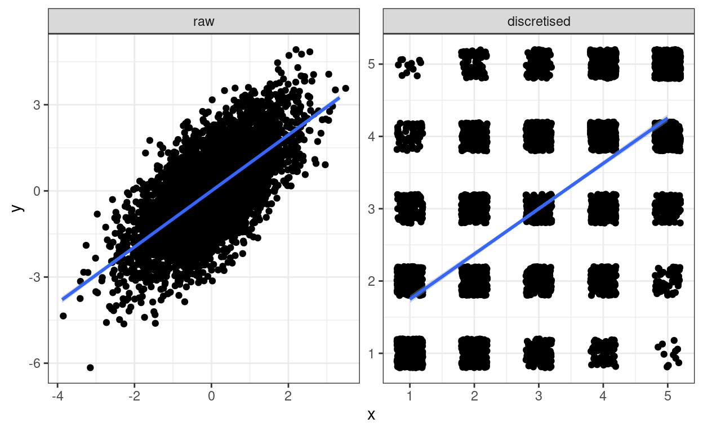
Amusing! Ive put the linear regression fit line on both.
ggplot(data = tibDat2,
aes(x = x, y = y)) +
facet_wrap(facets = vars(transform),
ncol = 2,
scales = "free") +
geom_point(alpha = .01) +
geom_smooth(method = "lm") +
theme_bw()
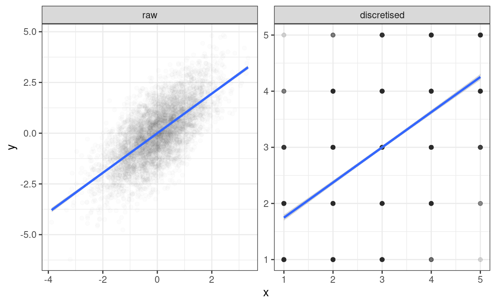
Transparency that works on the right for the discretised data, well works up to a point, is a bit too thin for the raw data. I cant see that as of now (26.i.21 and ggplot version 3.3.3) that you can map transparency, i.e.alpha to a variable as you can, say, for colour. So to get a side-by-side plot Im using a different approach. There are various ways of doing this, a useful page seems to be: http://www.sthda.com/english/articles/24-ggpubr-publication-ready-plots/81-ggplot2-easy-way-to-mix-multiple-graphs-on-the-same-page/
ggplot(data = filter(tibDat2, transform == "raw"), # select just the raw data
aes(x = x, y = y)) +
geom_point(alpha = .2) +
geom_smooth(method = "lm") +
theme_bw() -> tmpPlot1
ggplot(data = filter(tibDat2, transform == "discretised"), # select just the raw data
aes(x = x, y = y)) +
geom_point(alpha = .01) +
geom_smooth(method = "lm") +
theme_bw() -> tmpPlot2
### use ggarrange from the ggpubr package, see the URL for other options
ggpubr::ggarrange(tmpPlot1, tmpPlot2)
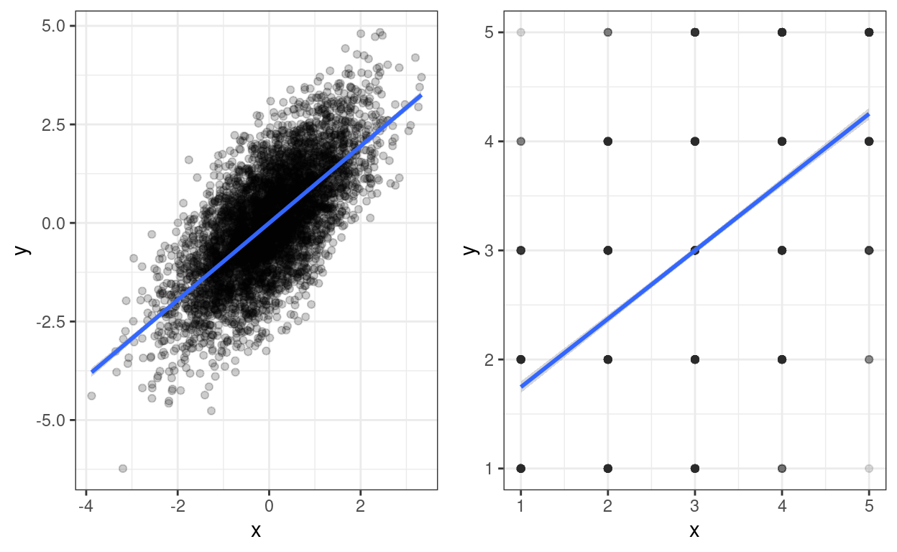
geom_count()ggplot(data = tibDat2,
aes(x = x, y = y)) +
facet_wrap(facets = vars(transform),
ncol = 2,
scales = "free") +
geom_count() +
geom_smooth(method = "lm") +
scale_size_area(n.breaks = 10) +
theme_bw()
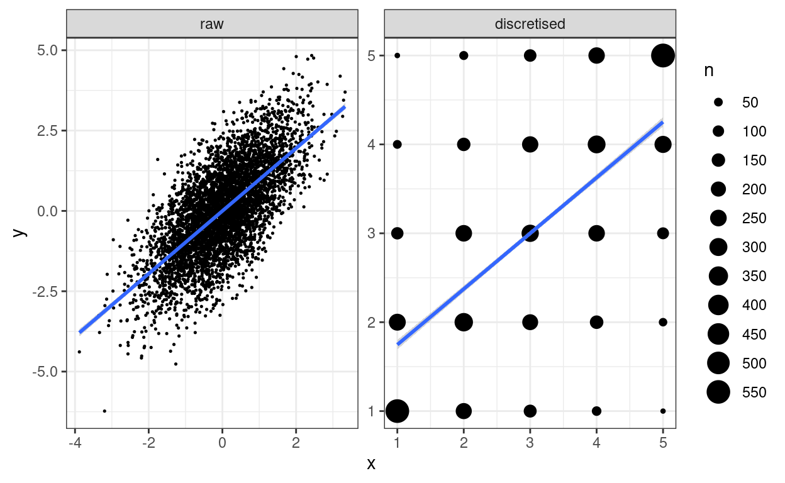
I used a rather excessive number of breaks there but it makes the point.
valRawCorr <- cor(tibDat$x, tibDat$y)
valDisc5Corr <- cor(tibDat$x5, tibDat$y5)
vecRawCorrCI <- cor.test(tibDat$x, tibDat$y)$conf.int
vecDisc5CorrCI <- cor.test(tibDat$x5, tibDat$y5)$conf.int
### or here's another, tidyverse way to do this
### seems like unnecessary faff except that it makes
### it so easy to do a micro forest plot (see below)
getParmPearsonCI <- function(x, y){
### little function to get parametric 95% CI from two vectors
obsCorr <- cor(x, y)
tmpCI <- cor.test(x, y)$conf.int
return(list(LCL = tmpCI[1],
obsCorr = obsCorr,
UCL = tmpCI[2]))
}
tibDat2 %>%
group_by(transform) %>%
summarise(pearson = list(getParmPearsonCI(x, y))) %>%
unnest_wider(pearson) -> tibCorrs
### which gives us this
# tibCorrs
# # A tibble: 2 x 4
# transform LCL obsCorr UCL
# <fct> <dbl> <dbl> <dbl>
# 1 raw 0.676 0.691 0.705
# 2 discretised 0.609 0.626 0.643
The correlation between the original variables is 0.691 with parametric 95% confidence interval (CI) from 0.676 to 0.705 whereas that between the discretised variables is 0.626 with 95% CI from 0.609 to 0.643 so some clear attenuation there. Micro forest plot of that:
ggplot(data = tibCorrs,
aes(x = transform, y = obsCorr)) +
geom_point() +
geom_linerange(aes(ymin = LCL, ymax = UCL)) +
ylim(.5, 1) +
theme_bw()
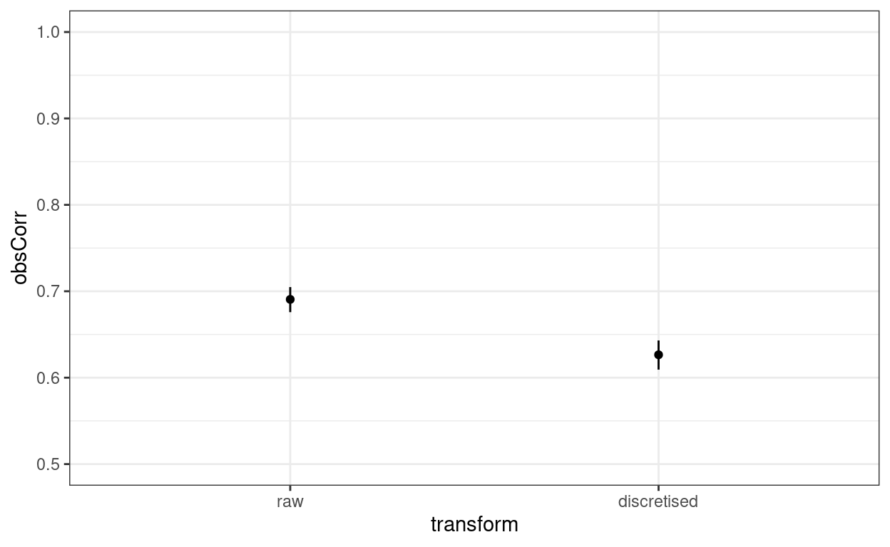
Yup, thats a fairly large and clear difference on a y scale from .5 to 1.0. What about the linear regression?
Call:
lm(formula = scale(y) ~ scale(x), data = tibDat)
Coefficients:
(Intercept) scale(x)
1.066e-17 6.906e-01
Call:
lm(formula = scale(y5) ~ scale(x5), data = tibDat)
Coefficients:
(Intercept) scale(x5)
-1.726e-17 6.265e-01 | transform | term | estimate | std.error | statistic | p.value |
|---|---|---|---|---|---|
| raw | (Intercept) | 1.066e-17 | 0.01023 | 1.042e-15 | 1 |
| raw | scale(x) | 0.6906 | 0.01023 | 67.51 | 0 |
| discretised | (Intercept) | -1.726e-17 | 0.01102 | -1.566e-15 | 1 |
| discretised | scale(x) | 0.6265 | 0.01102 | 56.83 | 0 |
Oh dear, oh dear! I think I should have known that the standardised regression (slope) coefficients of a simple, two variable linear regression are the Pearson correlations!
https://www.psyctc.org/psyctc/ web site. In most browsers I think that will open in a new page and if you close it when you have sent your message I think that and most browsers will bring you back here.
This has been created using the distill package in R (and in Rstudio). Distill is a publication format for scientific and technical writing, native to the web. There is a bit more information about distill at https://rstudio.github.io/distill but I found the youtube (ugh) presentation by Malle Salmon at https://www.youtube.com/watch?v=Xyc4-bJjdys much more useful than the very minimal notes at that github page. After watching (the first half of) that presentation the github documentation becomes useful.
As with most things I put on the web, I am putting this under the Creative Commons Attribution Share-Alike licence.
For attribution, please cite this work as
Evans (2021, Jan. 27). Chris (Evans) R SAFAQ: Handling overprinting. Retrieved from https://www.psyctc.org/R_blog/posts/2021-01-27-handling-overprinting/
BibTeX citation
@misc{evans2021handling,
author = {Evans, Chris},
title = {Chris (Evans) R SAFAQ: Handling overprinting},
url = {https://www.psyctc.org/R_blog/posts/2021-01-27-handling-overprinting/},
year = {2021}
}